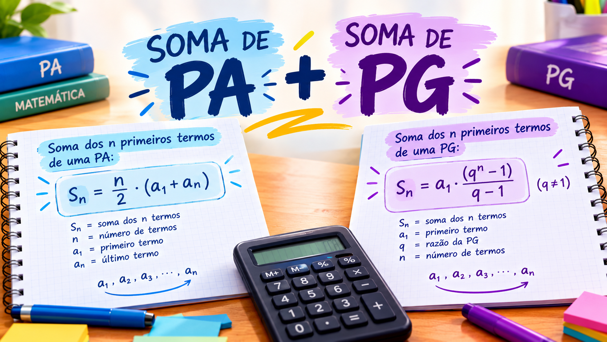

A Progressão Aritmética (PA) é uma sequência em que a diferença entre termos consecutivos é constante. Para somar seus termos, utilizamos a fórmula:

Exemplo: na sequência 2, 4, 6, 8, 10, a soma é:


Inicialmente, o Brasil manteve uma posição de neutralidade durante a Segunda Guerra Mundial. Porém, após ataques de submarinos alemães a navios brasileiros, o país declarou guerra às potências do Eixo em 1942.
A Progressão Aritmética (PA) é uma sequência em que a diferença entre termos consecutivos é constante. Para somar seus termos, utilizamos a fórmula:
Exemplo: na sequência 2, 4, 6, 8, 10, a soma é:
A Progressão Geométrica (PG) é uma sequência em que cada termo é obtido multiplicando o anterior por uma razão constante. Para calcular a soma de seus termos, utilizamos:

Essa fórmula é válida quando q diferente de 1. O símbolo q representa a razão, e n indica a quantidade de termos. Exemplo: na sequência 2, 4, 8, 16, a soma é:

Uma PG infinita possui uma quantidade ilimitada de termos. Mesmo assim, sua soma pode se aproximar de um valor finito quando a razão está entre −1 e 1.
A fórmula utilizada é:

Exemplo: na sequência 8, 4, 2, 1, ... a razão é q = 1/2

Portanto, a soma infinita se aproxima de 16.